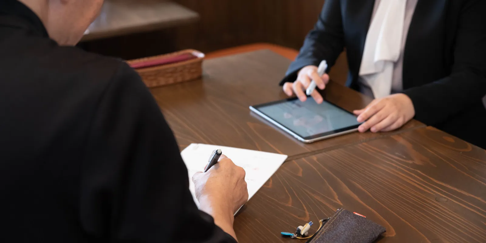
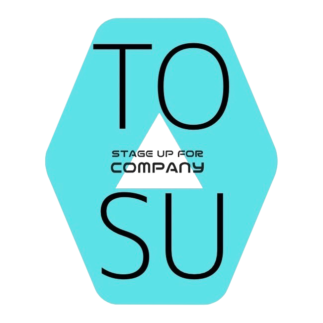
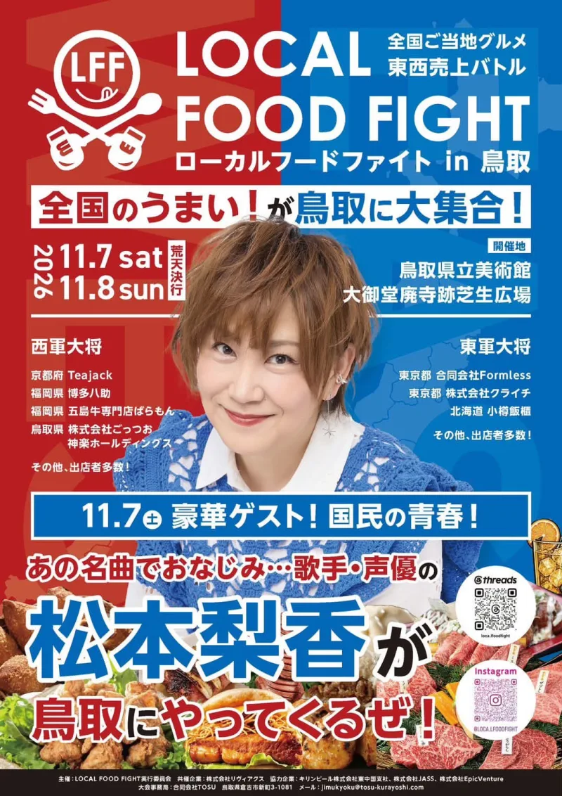
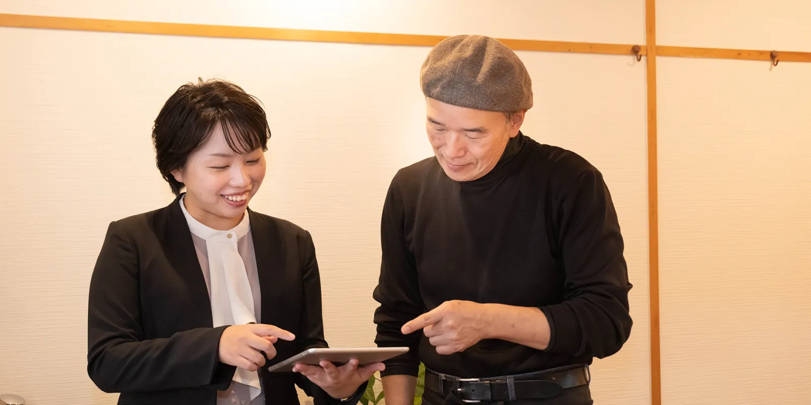
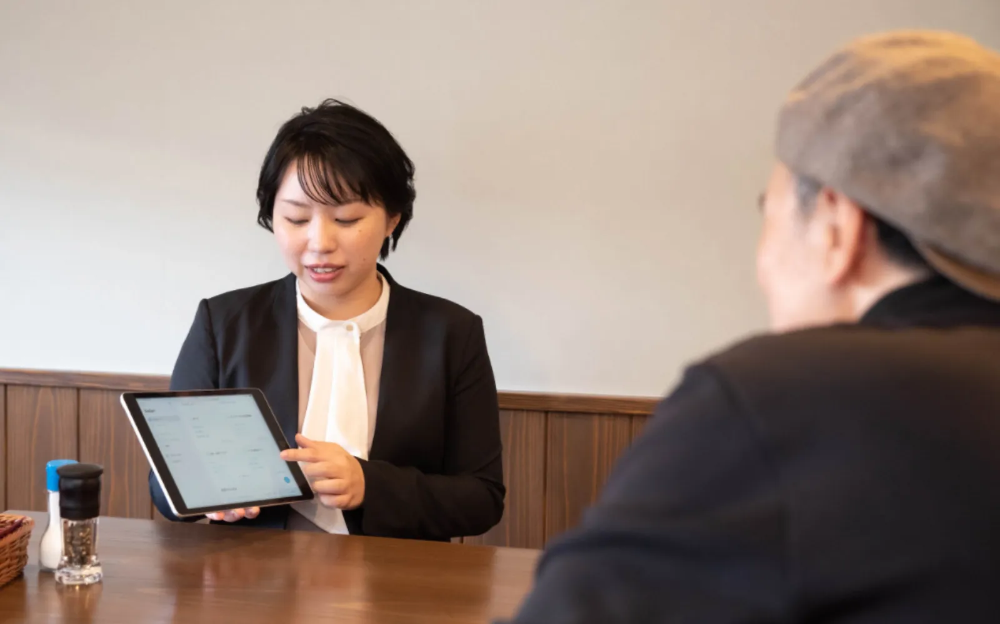
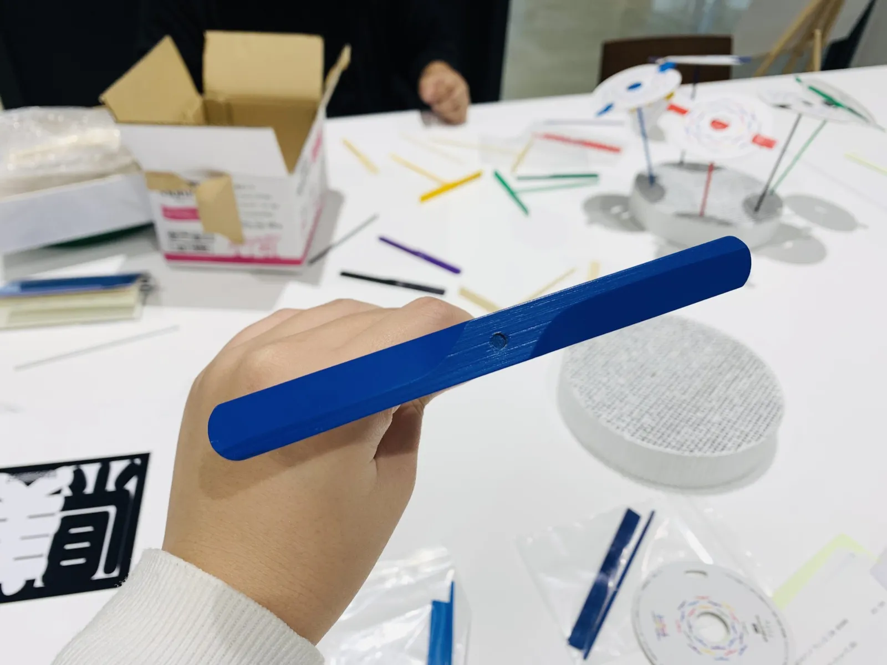
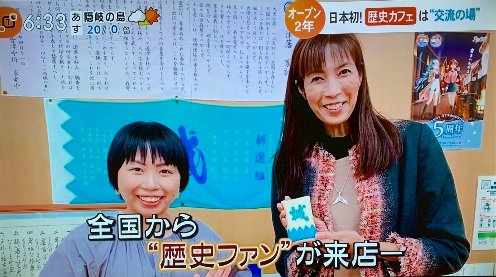
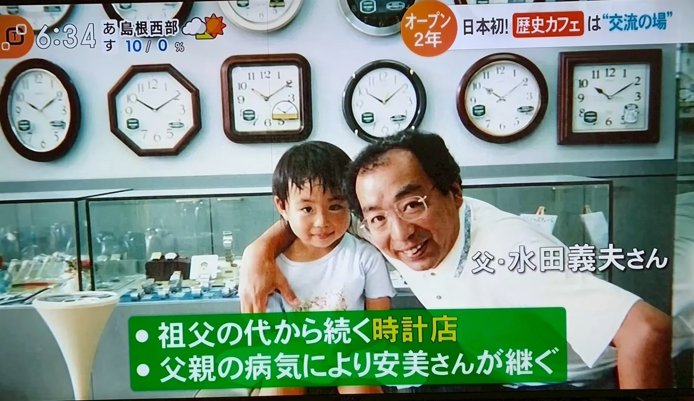
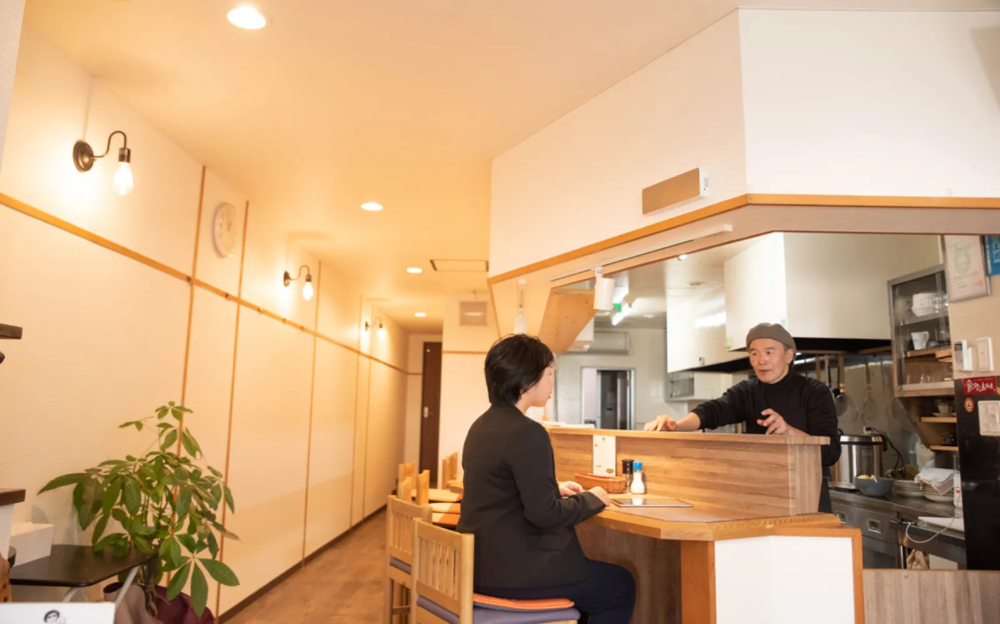

01
個別戦略設計相談
経営の作戦会議・壁打ちに。初回でボトルネックをつかみ、即日から実行できるアクションプランをお渡しします。支援機関や銀行の方の同席も歓迎です。
- スタッフ
- 60分 5,500円
- 松林 安美
- 60分 11,000円
※30分は半額。商工会・商工会議所の専門家派遣制度を使うと、初回無料・3回目まで半額になります。

合同会社TOSU鳥取・倉吉から、全国の挑戦者へ。
経営改善・開業・PR広報・商品開発まで。
本業に集中できるよう、
社員を1人雇うより手軽に、一緒に走ります。

まもなく開催TOSUが大会事務局を務めます
LOCAL FOOD FIGHT in 鳥取全国ご当地グルメ 東西売上バトル
全国から50店以上が西軍・東軍に分かれて売上を競います。会場へは中部総合事務所前から無料シャトルバスも運行。
戦後すぐから続く
時計店の三代目
閉店寸前の集落スーパーを
黒字化（NHK全国放送）
＋台北・香港
これまでのご支援エリア
広報・企画を担った
地域イベントの動員数
Media

About
倉吉市役所の職員だったころ、閉店まであと1か月という準限界集落のマイクロスーパーを、1か月で黒字に立て直しました。その様子はNHK「おはよう日本」で全国に紹介され、県知事や総務省が視察に訪れるお店になりました。
その後、鳥取県庁の外郭団体で新規事業の立ち上げや法人設立を支援。父の病気をきっかけに、戦後すぐから続く時計店の三代目を継ぎ、2024年に合同会社TOSUを設立しました。
一倉定、二宮尊徳、上杉鷹山、ドラッカー、松下幸之助――。歴史と先人の経営理論をもとに体系化した手法で、素早くPDCAを回し、早期の成果に全集中します。
Feature
社長や社員と志を同じくし、一蓮托生の思いで伴走します。
事務局・広報・営業を、社員を1人雇うより手軽にお引き受けします。
手が回らないところをTOSUが受け持ち、社長は本業に専念できます。
計画づくりだけで終わらせず、続く会社の仕組みまで整えます。
Service
経営支援の費用が経営を圧迫しては本末転倒。利益・状況・ご予算を総合的に拝見し、双方合意の上で金額を決めています。

01
経営の作戦会議・壁打ちに。初回でボトルネックをつかみ、即日から実行できるアクションプランをお渡しします。支援機関や銀行の方の同席も歓迎です。
※30分は半額。商工会・商工会議所の専門家派遣制度を使うと、初回無料・3回目まで半額になります。

02
経営支援歴15年のスタッフを中心に、マンツーマンで伴走します。創業・事業承継などの補助金を活用したご依頼にも多数対応してきました。

03
PR広報・ブランド設計・SNS運用・デザインを、企業のストーリーに沿って一つにつなげて設計します。販売後は売れた数に応じた成果報酬で、広報を続けて支える形も選べます。
Works
コミュニティビジネス
毎月の赤字を理事が自腹で補填利益率を適正値に改善し黒字化。NHK全国放送
商業施設
借金数千万円・家賃滞納債務整理とM&A、土地建物の購入で再建
飲食店
毎月約10万円の赤字1か月で月数万円の黒字へ
治療院
閉店目前新規事業で100万円の売上・経費削減
商品開発
企画・監修日本タイポグラフィ年鑑2026 パッケージ部門 入選
地域イベント
広報・企画戦略を担当地元テレビ局の特番を誘致・経済効果12億5千万円
鳥取大学／鳥取大学附属中学校／公立鳥取環境大学／京都信用金庫（全支店向け勉強会）／東京青年会議所／鳥取県主催 地域づくり研修会／鳥取県中部教頭会／全国の倫理法人会 ほか
鳥取大学・京都信用金庫・青年会議所・倫理法人会ほか、全国で登壇しています。

動画はここに入ります
TOSU College
掃除力・人間力・仕事能力・キャッシュフロー設計力・マーケティング力・広報力・企画力。小学生から大人まで、自分のペースで学べるオンライン学習コミュニティです。勉強会や視察研修、ボードゲーム会など、面白くて学びの多いイベントも通年で開いています。
月額 980円（税抜・小学生以上）
LINEで「カレッジ申込希望」と送るPhilosophy
Purpose
徳の高い人が
正当に報われる社会をつくる
Mission
地域課題と社会課題を
ビジネス手法で解決する
Vision
想いある人が仲間と
挑戦し続けられる社会
Value
真摯・創造・陰徳
義勇仁礼誠名誉忠義
上求菩提・下化衆生。人徳と智慧と責任感のあるリーダーと高みを目指し、学問と経験から得た知見を、悩める人に惜しみなく伝えていきます。
Store & Space

三代にわたって地域の時計を動かし続けてきました。修理・オーバーホールは一級技能士がひとつずつ。見積もりに合意してから作業に入ります。

Wi-Fi・電源完備の「サードプレイス」。民間図書館を併設したレンタルスペースとコワーキング。キッチン貸切で1日カフェの出店もできます。
Contact
ご相談・講演のご依頼・カレッジのお申し込みは、公式LINEかフォームからどうぞ。
ご紹介によるご相談を優先してお受けしています。